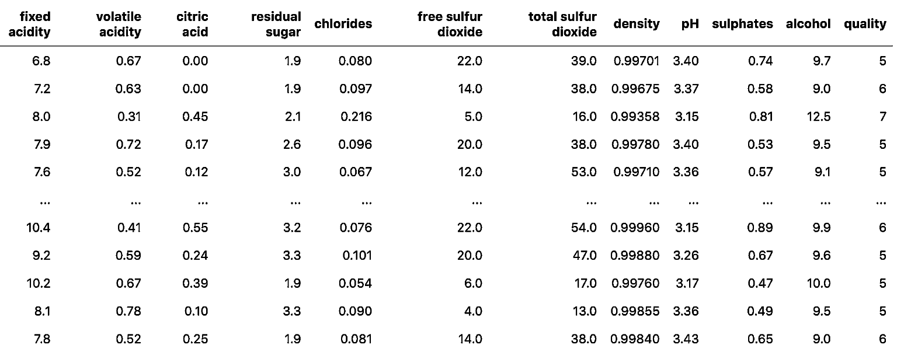
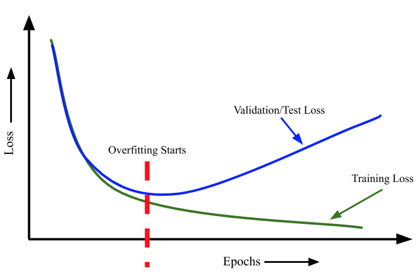
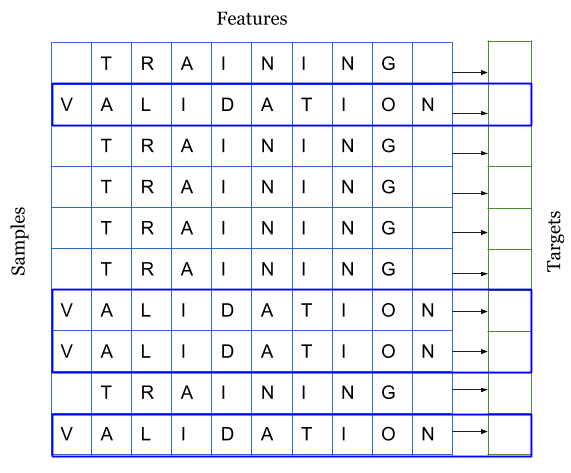
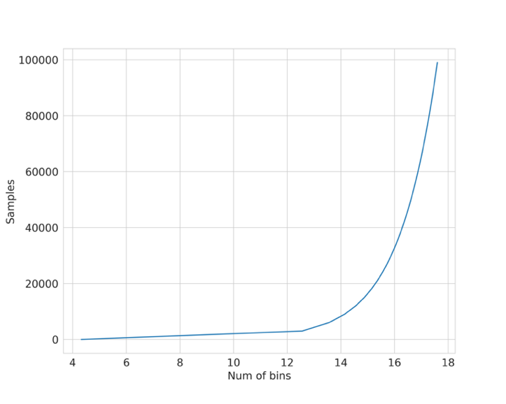

交叉检验
在上一章中，我们没有建立任何模型。原因很简单，在创建任何一种机器学习模型之前，我们必须知道什么是交叉检验，以及如何根据数据集选择最佳交叉检验数据集。
那么，什么是交叉检验，我们为什么要关注它？
关于什么是交叉检验，我们可以找到多种定义。我的定义只有一句话：交叉检验是构建机器学习模型过程中的一个步骤，它可以帮助我们确保模型准确拟合数据，同时确保我们不会过拟合。但这又引出了另一个词：过拟合。
要解释过拟合，我认为最好先看一个数据集。有一个相当有名的红酒质量数据集（red wine quality dataset）。这个数据集有 11 个不同的特征，这些特征决定了红酒的质量。
这些属性包括：
- 固定酸度（fixed acidity）
- 挥发性酸度（volatile acidity）
- 柠檬酸（citric acid）
- 残留糖（residual sugar）
- 氯化物（chlorides）
- 游离二氧化硫（free sulfur dioxide）
- 二氧化硫总量（total sulfur dioxide）
- 密度（density）
- PH 值（pH）
- 硫酸盐（sulphates）
- 酒精（alcohol）
根据这些不同特征，我们需要预测红葡萄酒的质量，质量值介于 0 到 10 之间。
让我们看看这些数据是怎样的。

图 1:红葡萄酒质量数据集简单展示
我们可以将这个问题视为分类问题，也可以视为回归问题。为了简单起见，我们选择分类。然而，这个数据集值包含 6 种质量值。因此，我们将所有质量值映射到 0 到 5 之间。
# 一个映射字典，用于将质量值从 0 到 5 进行映射
quality_mapping = {
3: 0,
4: 1,
5: 2,
6: 3,
7: 4,
8: 5
}
# 你可以使用 pandas 的 map 函数以及任何字典，
# 来转换给定列中的值为字典中的值
df.loc[:, "quality"] = df.quality.map(quality_mapping)
当我们看大这些数据并将其视为一个分类问题时，我们脑海中会浮现出很多可以应用的算法，也许，我们可以使用神经网络。但是，如果我们从一开始就深入研究神经网络，那就有点牵强了。所以，让我们从简单的、我们也能可视化的东西开始：决策树。
在开始了解什么是过拟合之前，我们先将数据分为两部分。这个数据集有 1599 个样本。我们保留 1000 个样本用于训练，599 个样本作为一个单独的集合。
以下代码可以轻松完成划分：
# 使用 frac=1 的 sample 方法来打乱 dataframe
# 由于打乱后索引会改变，所以我们重置索引
df = df.sample(frac=1).reset_index(drop=True)
# 选取前 1000 行作为训练数据
df_train = df.head(1000)
# 选取最后的 599 行作为测试/验证数据
df_test = df.tail(599)
现在，我们将在训练集上使用 scikit-learn 训练一个决策树模型。
# 从 scikit-learn 导入需要的模块
from sklearn import tree
from sklearn import metrics
# 初始化一个决策树分类器，设置最大深度为 3
clf = tree.DecisionTreeClassifier(max_depth=3)
# 选择你想要训练模型的列
# 这些列作为模型的特征
cols = ['fixed acidity',
'volatile acidity',
'citric acid',
'residual sugar',
'chlorides',
'free sulfur dioxide',
'total sulfur dioxide',
'density',
'pH',
'sulphates',
'alcohol']
# 使用之前映射的质量以及提供的特征来训练模型
clf.fit(df_train[cols], df_train.quality)
请注意，我将决策树分类器的最大深度（max_depth）设为 3。该模型的所有其他参数均保持默认值。现在，我们在训练集和测试集上测试该模型的准确性：
# 在训练集上生成预测
train_predictions = clf.predict(df_train[cols])
# 在测试集上生成预测
test_predictions = clf.predict(df_test[cols])
# 计算训练数据集上预测的准确度
train_accuracy = metrics.accuracy_score(
df_train.quality, train_predictions
)
# 计算测试数据集上预测的准确度
test_accuracy = metrics.accuracy_score(
df_test.quality, test_predictions
)
训练和测试的准确率分别为 58.9%和 54.25%。现在，我们将最大深度（max_depth）增加到 7，并重复上述过程。这样，训练准确率为 76.6%，测试准确率为 57.3%。在这里，我们使用准确率，主要是因为它是最直接的指标。对于这个问题来说，它可能不是最好的指标。我们可以根据最大深度（max_depth）的不同值来计算这些准确率，并绘制曲线图。
# 注意：这段代码在 Jupyter 笔记本中编写
# 导入 scikit-learn 的 tree 和 metrics
from sklearn import tree
from sklearn import metrics
# 导入 matplotlib 和 seaborn
# 用于绘图
import matplotlib
import matplotlib.pyplot as plt
import seaborn as sns
# 设置全局标签文本的大小
matplotlib.rc('xtick', labelsize=20)
matplotlib.rc('ytick', labelsize=20)
# 确保图表直接在笔记本内显示
%matplotlib inline
# 初始化用于存储训练和测试准确度的列表
# 我们从 50% 的准确度开始
train_accuracies = [0.5]
test_accuracies = [0.5]
# 遍历几个不同的树深度值
for depth in range(1, 25):
# 初始化模型
clf = tree.DecisionTreeClassifier(max_depth=depth)
# 选择用于训练的列/特征
cols = [
'fixed acidity', 'volatile acidity', 'citric acid',
'residual sugar', 'chlorides', 'free sulfur dioxide',
'total sulfur dioxide', 'density', 'pH',
'sulphates', 'alcohol'
]
# 在给定特征上拟合模型
clf.fit(df_train[cols], df_train.quality)
# 创建训练和测试预测
train_predictions = clf.predict(df_train[cols])
test_predictions = clf.predict(df_test[cols])
# 计算训练和测试准确度
train_accuracy = metrics.accuracy_score(
df_train.quality, train_predictions
)
test_accuracy = metrics.accuracy_score(
df_test.quality, test_predictions
)
# 添加准确度到列表
train_accuracies.append(train_accuracy)
test_accuracies.append(test_accuracy)
# 使用 matplotlib 和 seaborn 创建两个图
plt.figure(figsize=(10, 5))
sns.set_style("whitegrid")
plt.plot(train_accuracies, label="train accuracy")
plt.plot(test_accuracies, label="test accuracy")
plt.legend(loc="upper left", prop={'size': 15})
plt.xticks(range(0, 26, 5))
plt.xlabel("max_depth", size=20)
plt.ylabel("accuracy", size=20)
plt.show()
这将生成如图 2 所示的曲线图。

图 2：不同 max_depth 训练和测试准确率。
我们可以看到，当最大深度（max_depth）的值为 14 时，测试数据的得分最高。随着我们不断增加这个参数的值，测试准确率会保持不变或变差，但训练准确率会不断提高。这说明，随着最大深度（max_depth）的增加，决策树模型对训练数据的学习效果越来越好，但测试数据的性能却丝毫没有提高。
这就是所谓的过拟合。
模型在训练集上完全拟合，而在测试集上却表现不佳。这意味着模型可以很好地学习训练数据，但无法泛化到未见过的样本上。在上面的数据集中，我们可以建立一个最大深度（max_depth）非常高的模型，它在训练数据上会有出色的结果，但这种模型并不实用，因为它在真实世界的样本或实时数据上不会提供类似的结果。
有人可能会说，这种方法并没有过拟合，因为测试集的准确率基本保持不变。过拟合的另一个定义是，当我们不断提高训练损失时，测试损失也在增加。这种情况在神经网络中非常常见。
每当我们训练一个神经网络时，都必须在训练期间监控训练集和测试集的损失。如果我们有一个非常大的网络来处理一个非常小的数据集（即样本数非常少），我们就会观察到，随着我们不断训练，训练集和测试集的损失都会减少。但是，在某个时刻，测试损失会达到最小值，之后，即使训练损失进一步减少，测试损失也会开始增加。我们必须在验证损失达到最小值时停止训练。
这是对过拟合最常见的解释。
奥卡姆剃刀用简单的话说，就是不要试图把可以用简单得多的方法解决的事情复杂化。换句话说，最简单的解决方案就是最具通用性的解决方案。一般来说，只要你的模型不符合奥卡姆剃刀原则，就很可能是过拟合。

图 3：过拟合的最一般定义
现在我们可以回到交叉检验。
在解释过拟合时，我决定将数据分为两部分。我在其中一部分上训练模型，然后在另一部分上检查其性能。这也是交叉检验的一种，通常被称为 "暂留集"（hold-out set）。当我们拥有大量数据，而模型推理是一个耗时的过程时，我们就会使用这种（交叉）验证。
交叉检验有许多不同的方法，它是建立一个良好的机器学习模型的最关键步骤。选择正确的交叉检验取决于所处理的数据集，在一个数据集上适用的交叉检验也可能不适用于其他数据集。不过，有几种类型的交叉检验技术最为流行和广泛使用。
其中包括：
- k 折交叉检验
- 分层 k 折交叉检验
- 暂留交叉检验
- 留一交叉检验
- 分组 k 折交叉检验
交叉检验是将训练数据分层几个部分，我们在其中一部分上训练模型，然后在其余部分上进行测试。请看图 4。

图 4：将数据集拆分为训练集和验证集
图 4 和图 5 说明，当你得到一个数据集来构建机器学习模型时，你会把它们分成两个不同的集：训练集和验证集。很多人还会将其分成第三组，称之为测试集。不过，我们将只使用两个集。如你所见，我们将样本和与之相关的目标进行了划分。我们可以将数据分为 k 个互不关联的不同集合。这就是所谓的 k 折交叉检验。

图 5：K 折交叉检验
我们可以使用 scikit-learn 中的 KFold 将任何数据分割成 k 个相等的部分。每个样本分配一个从 0 到 k-1 的值。
# 导入 pandas 和 scikit-learn 的 model_selection 模块
import pandas as pd
from sklearn import model_selection
if __name__ == "__main__":
# 训练数据存储在名为 train.csv 的 CSV 文件中
df = pd.read_csv("train.csv")
# 我们创建一个名为 kfold 的新列，并用 -1 填充
df["kfold"] = -1
# 接下来的步骤是随机打乱数据的行
df = df.sample(frac=1).reset_index(drop=True)
# 从 model_selection 模块初始化 kfold 类
kf = model_selection.KFold(n_splits=5)
# 填充新的 kfold 列（enumerate的作用是返回一个迭代器）
for fold, (trn_, val_) in enumerate(kf.split(X=df)):
df.loc[val_, 'kfold'] = fold
# 保存带有 kfold 列的新 CSV 文件
df.to_csv("train_folds.csv", index=False)
几乎所有类型的数据集都可以使用此流程。例如，当数据图像时，您可以创建一个包含图像 ID、图像位置和图像标签的 CSV，然后使用上述流程。
另一种重要的交叉检验类型是分层 k 折交叉检验。如果你有一个偏斜的二元分类数据集，其中正样本占 90%，负样本只占 10%，那么你就不应该使用随机 k 折交叉。对这样的数据集使用简单的 k 折交叉检验可能会导致折叠样本全部为负样本。在这种情况下，我们更倾向于使用分层 k 折交叉检验。分层 k 折交叉检验可以保持每个折中标签的比例不变。因此，在每个折叠中，都会有相同的 90% 正样本和 10% 负样本。因此，无论您选择什么指标进行评估，都会在所有折叠中得到相似的结果。
修改创建 k 折交叉检验的代码以创建分层 k 折交叉检验也很容易。我们只需将 model_selection.KFold 更改为 model_selection.StratifiedKFold ，并在 kf.split(...) 函数中指定要分层的目标列。我们假设 CSV 数据集有一列名为 "target" ，并且是一个分类问题。
# 导入 pandas 和 scikit-learn 的 model_selection 模块
import pandas as pd
from sklearn import model_selection
if __name__ == "__main__":
# 训练数据保存在名为 train.csv 的 CSV 文件中
df = pd.read_csv("train.csv")
# 添加一个新列 kfold，并用 -1 初始化
df["kfold"] = -1
# 随机打乱数据行
df = df.sample(frac=1).reset_index(drop=True)
# 获取目标变量
y = df.target.values
# 初始化 StratifiedKFold 类，设置折数（folds）为 5
kf = model_selection.StratifiedKFold(n_splits=5)
# 使用 StratifiedKFold 对象的 split 方法来获取训练和验证索引
for f, (t_, v_) in enumerate(kf.split(X=df, y=y)):
df.loc[v_, 'kfold'] = f
# 保存包含 kfold 列的新 CSV 文件
df.to_csv("train_folds.csv", index=False)
对于葡萄酒数据集，我们来看看标签的分布情况。
b = sns.countplot(x='quality', data=df)
b.set_xlabel("quality", fontsize=20)
b.set_ylabel("count", fontsize=20)
请注意，我们继续上面的代码。因此，我们已经转换了目标值。从图 6 中我们可以看出，质量偏差很大。有些类别有很多样本，有些则没有那么多。如果我们进行简单的 k 折交叉检验，那么每个折叠中的目标值分布都不会相同。因此，在这种情况下，我们选择分层 k 折交叉检验。

图 6：葡萄酒数据集中 "质量" 分布情况
规则很简单，如果是标准分类问题，就盲目选择分层 k 折交叉检验。
但如果数据量很大，该怎么办呢？假设我们有 100 万个样本。5 倍交叉检验意味着在 800k 个样本上进行训练，在 200k 个样本上进行验证。根据我们选择的算法，对于这样规模的数据集来说，训练甚至验证都可能非常昂贵。在这种情况下，我们可以选择暂留交叉检验。
创建保持结果的过程与分层 k 折交叉检验相同。对于拥有 100 万个样本的数据集，我们可以创建 10 个折叠而不是 5 个，并保留其中一个折叠作为保留样本。这意味着，我们将有 10 万个样本被保留下来，我们将始终在这个样本集上计算损失、准确率和其他指标，并在 90 万个样本上进行训练。
在处理时间序列数据时，暂留交叉检验也非常常用。假设我们要解决的问题是预测一家商店 2020 年的销售额，而我们得到的是 2015-2019 年的所有数据。在这种情况下，你可以选择 2019 年的所有数据作为保留数据，然后在 2015 年至 2018 年的所有数据上训练你的模型。

图 7：时间序列数据示例
在图 7 所示的示例中，假设我们的任务是预测从时间步骤 31 到 40 的销售额。我们可以保留 21 至 30 步的数据，然后从 0 步到 20 步训练模型。需要注意的是，在预测 31 步至 40 步时，应将 21 步至 30 步的数据纳入模型，否则，模型的性能将大打折扣。
在很多情况下，我们必须处理小型数据集，而创建大型验证集意味着模型学习会丢失大量数据。在这种情况下，我们可以选择留一交叉检验，相当于特殊的 k 则交叉检验其中 k=N ，N 是数据集中的样本数。这意味着在所有的训练折叠中，我们将对除 1 之外的所有数据样本进行训练。这种类型的交叉检验的折叠数与数据集中的样本数相同。
需要注意的是，如果模型的速度不够快，这种类型的交叉检验可能会耗费大量时间，但由于这种交叉检验只适用于小型数据集，因此并不重要。
现在我们可以转向回归问题了。回归问题的好处在于，除了分层 k 折交叉检验之外，我们可以在回归问题上使用上述所有交叉检验技术。也就是说，我们不能直接使用分层 k 折交叉检验，但有一些方法可以稍稍改变问题，从而在回归问题中使用分层 k 折交叉检验。大多数情况下，简单的 k 折交叉检验适用于任何回归问题。但是，如果发现目标分布不一致，就可以使用分层 k 折交叉检验。
要在回归问题中使用分层 k 折交叉检验，我们必须先将目标划分为若干个分层，然后再以处理分类问题的相同方式使用分层 k 折交叉检验。选择合适的分层数有几种选择。如果样本量很大（> 10k，> 100k），那么就不需要考虑分层的数量。只需将数据分为 10 或 20 层即可。如果样本数不多，则可以使用 Sturge's Rule 这样的简单规则来计算适当的分层数。
Sturge's Rule：
其中 \(N\) 是数据集中的样本数。该函数如图 8 所示。

图 8：利用斯特格法则绘制样本与箱数对比图
让我们制作一个回归数据集样本，并尝试应用分层 k 折交叉检验，如下面的 python 代码段所示。
# stratified-kfold for regression
# 为回归问题进行分层K-折交叉验证
# 导入需要的库
import numpy as np
import pandas as pd
from sklearn import datasets
from sklearn import model_selection
# 创建分折（folds）的函数
def create_folds(data):
# 创建一个新列叫做kfold，并用-1来填充
data["kfold"] = -1
# 随机打乱数据的行
data = data.sample(frac=1).reset_index(drop=True)
# 使用Sturge规则计算bin的数量
num_bins = int(np.floor(1 + np.log2(len(data))))
# 使用pandas的cut函数进行目标变量（target）的分箱
data.loc[:, "bins"] = pd.cut(
data["target"], bins=num_bins, labels=False
)
# 初始化StratifiedKFold类
kf = model_selection.StratifiedKFold(n_splits=5)
# 填充新的kfold列
# 注意：我们使用的是bins而不是实际的目标变量（target）！
for f, (t_, v_) in enumerate(kf.split(X=data, y=data.bins.values)):
data.loc[v_, 'kfold'] = f
# 删除bins列
data = data.drop("bins", axis=1)
# 返回包含folds的数据
return data
# 主程序开始
if __name__ == "__main__":
# 创建一个带有15000个样本、100个特征和1个目标变量的样本数据集
X, y = datasets.make_regression(
n_samples=15000, n_features=100, n_targets=1
)
# 使用numpy数组创建一个数据框
df = pd.DataFrame(
X,
columns=[f"f_{i}" for i in range(X.shape[1])]
)
df.loc[:, "target"] = y
# 创建folds
df = create_folds(df)
交叉检验是构建机器学习模型的第一步，也是最基本的一步。如果要做特征工程，首先要拆分数据。如果要建立模型，首先要拆分数据。如果你有一个好的交叉检验方案，其中验证数据能够代表训练数据和真实世界的数据，那么你就能建立一个具有高度通用性的好的机器学习模型。
本章介绍的交叉检验类型几乎适用于所有机器学习问题。不过，你必须记住，交叉检验也在很大程度上取决于数据，你可能需要根据你的问题和数据采用新的交叉检验形式。
例如，假设我们有一个问题，希望建立一个模型，从患者的皮肤图像中检测出皮肤癌。我们的任务是建立一个二元分类器，该分类器接收输入图像并预测其良性或恶性的概率。
在这类数据集中，训练数据集中可能有同一患者的多张图像。因此，要在这里建立一个良好的交叉检验系统，必须有分层的 k 折交叉检验，但也必须确保训练数据中的患者不会出现在验证数据中。幸运的是，scikit-learn 提供了一种称为 GroupKFold 的交叉检验类型。 在这里，患者可以被视为组。 但遗憾的是，scikit-learn 无法将 GroupKFold 与 StratifiedKFold 结合起来。所以你需要自己动手。我把它作为一个练习留给读者的练习。